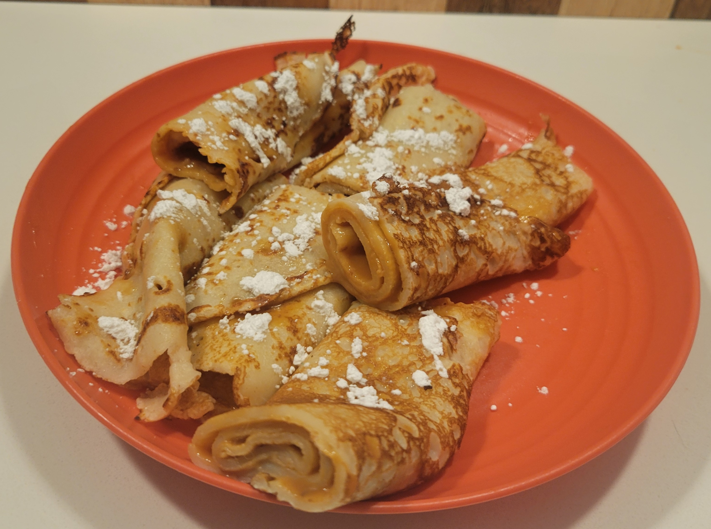

Click here to skip to recipe

Manjar, also known as dulce de leche in Argentina or Spain,
is a big component of Chilean pastries and sweets. My dad once
said: I don't ever crave sweets, but I do really like
manjar.
My favorite application of this sweet cream is in
crepes, which I first had from my grandma when I was very young
and still living in Chile. This was typically a light evening
meal—or "once," as we called it there—served with a tea to
balance out its sweetness. We still make these here in the US
regularly, but when we make them, they don't last very long.
Ingredients
| Quantity | Ingredient |
|---|---|
| 2 cups (and a splash) | Milk |
| 2 cups | Flour |
| 2 | Eggs |
| 1 can (14 ounces) | Dulce de Leche |
| 1 tsp | Salt |
| Materials |
|---|
| Measuring Cup |
| Medium Frying Pan |
| 2 large plates |
| Spoon |
| Deep Spoon/Ladle |
| Large Mixing Bowl |
| Whisk |
| Spatula |
Instructions
- Mix eggs and milk in a large bowl
- Whisk flour into mixture
- Open can of dulce de leche and mix splashes of milk into it until it creamy and easily spreadable
- Pour a thin layer of batter into a frying pan on high heat and cook both sides
- Put cooked crepe on a large plate
- Repeat steps 4 and 5 until all batter is used up
- Spread dulce de leche onto the topmost crepe
- Roll up the crepe and set it onto a serving plate
- Repeat steps 7 and 8 until all crepes are made
Makes 12 rolled crepes
Estimated time to create: 28
minutes (10 to prepare batter and dulce de leche, 1.5 per
crepe)
Extra Tips
- Add 3 drops of vanilla extract to the batter to add an extra flavor
- Sprinkle powdered sugar onto the crepes for a sweet topping
- Make sure that the pan is completely heated up before pouring batter
- Pairs great with tea
- Can't find canned dulce de leche?
- Submerge and boil a can of sweetened condensed milk for 3 hours
- Let can cool to room temperate